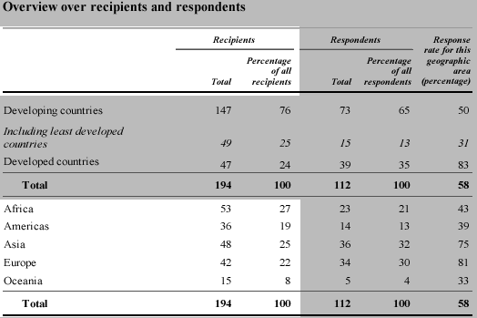
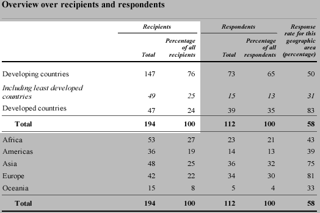
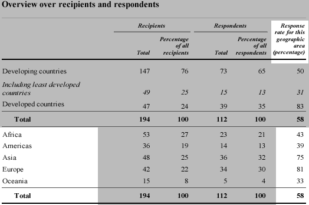

Notwendige Eigenschaften einer Häufigkeitstabelle
Eine Häufigkeitstabelle teilt jedes Individuum aus einer Sammlung von "Individuen" in eine von mehreren Kategorien ein. Jedes Individuum muss daher 1 zu genau einem der Zählungen in der Tabelle beitragen.
| Stelle sicher, dass du erkennen kannst, ob du eine Häufigkeitstabelle mit Zählungen oder eine mit Prozentangaben vor dir hast. |
Antworten auf eine UN-Umfrage
Die Vereinten Nationen leiteten eine Umfrage über das
Ausmaß in welchen Ländern eine Reihe von "Grundprinzipien
der amtlichen Statistik" in ihren nationalen statistischen Ämtern
umgesetzt wurde. Die folgende Tabelle wurde in einem UN-Bericht
veröffentlicht und beschreibt, welche Länder Fragebögen
(die Empfänger) zugesandt bekamen und welche den Fragebogen
zurückgeschickt haben (die Beantworter).
|  |
Der hervorgehobene Teil der obigen Tabelle ist eine Häufigkeitstabelle, die die Empfängerländer nach Region kategorisiert. Jedes Land gehört zu genau einer der fünf Regionen. Die zwei Spalten rechts davon sind eine weitere Häufigkeitstabelle, welche die Verteilung der beantwortenden Länder nach Region darstellt.
Die hervorgehobenen Informationen der nächsten Tabelle jedoch stellen keine Häufigkeitstabelle dar - die am wenigsten entwickelten Länder tragen 1 zu beiden der oberen Reihen bei (entwickelnd und am wenigsten entwickelnd), weshalb die Prozentsätze in der Summe nicht 100% ergeben.
|  |
Zwar ist nichts "falsch" an dieser Tabelle, aber das Format kann für Verwirrung sorgen. Es ist ziemlich einfach, die Information neu zu strukturieren und – siehe unten - als eine richtige Häufigkeitstabelle darzustellen.
Es ist besonders wichtig, Häufigkeitstabellen zu erkennen, weil die grafischen Methoden, die im nächsten Abschnitt beschrieben werden, für die meisten anderen Arten von Daten ungeeignet sind.
Schließlich ist zu beachten, dass die Werte in der rechten unteren Ecke der Tabelle auch keine Häufigkeitstabelle darstellen.
|  |
Obwohl diese Werte Prozentangaben, summieren sie nicht zu 100%. Jeder dieser Prozentsätze stammt tatsächlich aus einer einfacheren Häufigkeitstabelle, welche die Länder einer Region in „Beantworter“ und „Nicht-Beantworter“ einteilt. Beispielsweise stammt die Quote der Beantwortung von 81% für Europa aus der folgenden Häufigkeitstabelle.
Wenn es nur zwei Kategorien gibt, fasst ein einzelner Wert (wie die Quote der Beantwortung von 81% hier) angemessen die Häufigkeitstabelle zusammen, so dass die Spalte der Beantwortungsrate in der veröffentlichten Tabelle eine präzise Zusammenfassung darstellt.